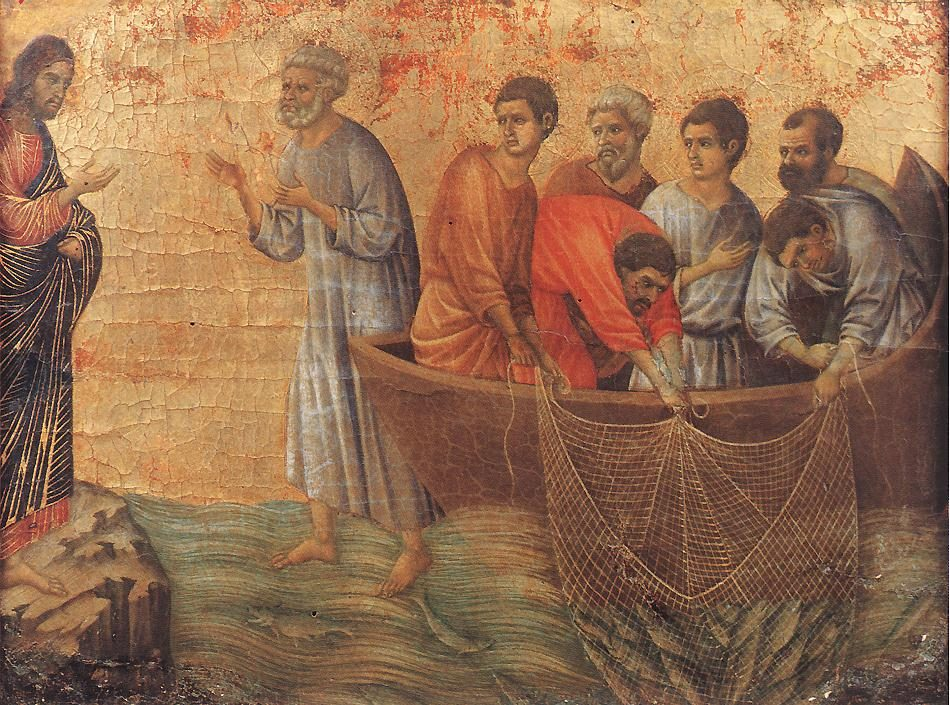

Juan 21 — La Traducción Mister

⚠ Duccio pinta el momento del reconocimiento y no el desayuno: Jesús en la orilla a la izquierda, la red subiendo a la derecha, y Pedro entre ambos con las manos alzadas —descalzo, y de pie SOBRE el agua. El capítulo dice que Pedro «se lanzó al mar» (v7) y nunca lo hace caminar, nadar ni estar de pie sobre él; la figura erguida pertenece a la otra escena acuática de los Evangelios, en que Pedro sí sale sobre el lago (Mateo 14:29, ya en estas páginas). Duccio también pone a Jesús sobre una roca y no en la «playa» (v4), y omite por completo el fuego de carbón, el pescado y el pan de los vv9–13. Lo que conserva es la red, dibujada tan pesada que cuelga bajo el casco (v6), y seis hombres en la barca —los siete del v2 menos Pedro.

Notas sobre esta traducción
«Tiberias» está en solo tres versículos del Nuevo Testamento, y los tres son de este Evangelio: 6:1, 6:23 y este. En 6:1 (ya en estas páginas) el lago se glosa «el mar de Galilea, es decir, el de Tiberias»; aquí la glosa desaparece y el lago es simplemente el mar de Tiberias, nombrado por la ciudad de su orilla occidental (véanse las entradas del lago y de la ciudad). A las mujeres en el sepulcro se les había dicho que Jesús iba delante de los discípulos a Galilea (Mateo 28:7; Marcos 16:7, ya en estas páginas); este Evangelio no dice cómo llegaron los discípulos hasta allí, y no conecta la escena con ese mensaje.
⚠ «Se reveló» (ephanerōsen, v1, dicho dos veces, y otra vez en el v14) es el verbo de los primeros anuncios del Evangelio: Juan el Bautista vino bautizando «para que él fuera revelado a Israel» (Juan 1:31), y en Caná Jesús «reveló su gloria» (Juan 2:11, ya en estas páginas, todavía no en español). Está nueve veces en ocho versículos de este Evangelio, tres de ellas en este capítulo. El estante lo imprime de tres maneras: RV 1909 RV60 y TNM 1987 «se manifestó», la NVI «se apareció», y la TNM 2019 «se les apareció» la primera vez y «se manifestó» la segunda. Esta traducción conserva «se reveló», como en 2:11.
Siete están juntos, cinco de ellos con nombre —y los hijos de Zebedeo no se nombran en ningún otro lugar de este Evangelio. Pedro, Tomás, Natanael, «los hijos de Zebedeo» y dos discípulos sin nombre hacen siete. Los hijos de Zebedeo son los pescadores de los relatos de llamamiento de Marcos y de Lucas (Marcos 1:19–20; Lucas 5:10, ya en estas páginas), pero este es el único versículo de Juan que los menciona (véase la entrada de la enciclopedia). Tomás es llamado Dídimo por tercera y última vez (11:16; 20:24); Natanael, que aparece en este Evangelio solo en el capítulo 1 (Juan 1:45–49, ya en estas páginas, todavía no en español), recibe aquí una patria, Caná de Galilea. La Living Bible (solo en inglés), que cuenta el capítulo en primera persona, imprime «my brother James and I» donde el griego dice «los hijos de Zebedeo». El discípulo a quien Jesús amaba no está en la lista pero está en el lago en el v7, así que es uno de los hijos de Zebedeo o uno de los dos sin nombre; el texto no dice cuál (véase la entrada de la enciclopedia).
⚠ El verbo detrás de «pescaron» (piazō, vv3 y 10) está en ocho versículos de este Evangelio, y en los otros seis es el verbo para apresar a Jesús. Las autoridades «buscaban prenderlo» (7:30), enviaron alguaciles «para prenderlo» (7:32), algunos «querían prenderlo» (7:44), «nadie lo arrestó» (8:20), «volvieron a tratar de prenderlo» (10:39) y se ordenó que quien supiera dónde estaba lo denunciara, «para poder arrestarlo» (11:57) —todos ya en estas páginas; el español imprime «prender» y «arrestar» para un solo verbo griego. El Evangelio no lo comenta; el mismo verbo simplemente vuelve a la pesca.
Lucas cuenta una historia con los mismos ingredientes al comienzo del ministerio de Jesús. Allí también están Simón y los hijos de Zebedeo en el lago, han trabajado toda la noche sin pescar nada (Lucas 5:5), y a la palabra de Jesús sueltan las redes y sacan tantos peces que las redes «empezaban a romperse» (5:6); la red del v11, abajo, no se rasga, y el «de ahora en adelante estarás capturando vivos a hombres» de Lucas (5:10) no tiene contrapartida aquí. Los lectores han tomado los dos relatos como un solo suceso colocado en puntos distintos de la historia, o como dos sucesos; esta traducción imprime cada uno y no elige. Y este Evangelio no da ninguna razón por la que Pedro vaya a pescar.
«Los discípulos no sabían que era Jesús» (v4) es la cláusula que el Evangelio usó de María Magdalena en el sepulcro —ouk ēdei hoti Iēsous estin en 20:14 (ya en estas páginas)—, ahora en plural: ou mentoi ēdeisan hoi mathētai hoti Iēsous estin. En ambas escenas él está de pie allí y en ambas el reconocimiento llega después: allí al oír su nombre (20:16), aquí con la pesca (v7).
⚠ «Niños» (paidia, v5) es un tratamiento que Jesús no usa en ningún otro lugar de los cuatro Evangelios. En la cena había llamado a los discípulos teknia, «hijitos», la única vez que esa palabra está en este Evangelio (13:33, ya en estas páginas); los otros Evangelios usan paidia solo de niños de verdad (Marcos 10:14; Lucas 18:16, ya en estas páginas). El estante: la RV60 imprime «Hijitos», la palabra que esta traducción usa en 13:33 para teknia; la RV 1909 «Mozos», la NVI «Muchachos», la TNM 1987 «Niñitos» y la TNM 2019 «Hijos míos».
Prosphagion, que esta traducción imprime «nada de comer», está solo aquí en el Nuevo Testamento. Se forma con el verbo «comer» y un prefijo que significa «además», y suele entenderse como lo que se come con el pan —en la práctica, pescado—, pero el griego no dice «pescado». Ninguna de las cinco versiones del estante español lo suple: la RV 1909 la RV60 y la NVI imprimen «algo de comer», la TNM 1987 «nada de comer» y la TNM 2019 «nada que comer»; entre las inglesas, la NIV («haven’t you any fish?») y la TLB («Any fish, boys?») sí lo suplen. La pregunta es de las que esperan la respuesta no (mē ti), y la respuesta es un «No» escueto.
«Y encontrarán» no tiene objeto en el griego; «algo» está suplido. La RV 1909 y la RV60 imprimen el escueto «hallaréis», y la TNM 1987 «hallarán»; la NVI («pescarán algo») y la TNM 2019 («encontrarán algo») lo suplen. El griego dice que los discípulos «ya no tenían fuerza» (ouketi ischyon) para arrastrar la red; la RV 1909 imprime «no la podían en ninguna manera sacar», la RV60 «ya no la podían sacar» y la NVI «ya no podían sacar la red».
Los dos hombres conservan los papeles que tenían en el sepulcro: el discípulo a quien Jesús amaba es el primero en entender, Pedro el primero en actuar. En 20:4–8 (ya en estas páginas) el otro discípulo se adelanta a Pedro y es el primero en «ver y creer», mientras que Pedro es el primero en entrar; aquí el discípulo a quien Jesús amaba dice «¡Es el Señor!» y Pedro es el primero en el agua (v7) y el primero en arrastrar la red (v11).
⚠ «Se ciñó» (diezōsato) es el verbo del lavatorio de los pies, donde Jesús «se la ciñó» a una toalla (13:4, con 13:5, ya en estas páginas) —y la misma raíz vuelve en la profecía de los vv18–19, abajo. La «prenda exterior» (ependytēs) es una palabra que está solo aquí en el Nuevo Testamento. Gymnos, «desnudo», puede significar llevar solo la prenda interior, y el estante se divide sobre cómo decirlo: la RV 1909 la TNM 1987 y la TNM 2019 imprimen «desnudo», la RV60 «(porque se había despojado de ella)» y la NVI «semidesnudo»; entre las inglesas, la NIV «(for he had taken it off)» y la TLB «(for he was stripped to the waist)». Esta traducción imprime «desnudo» y deja que el lector lo tome; el versículo solo dice que se ciñó la prenda porque lo estaba.
«Doscientos codos» (v8) son unos noventa metros. Un codo es de unos cuarenta y cinco centímetros. La RV 1909 y la RV60 conservan «doscientos codos»; la TNM 1987 lo convierte en «unos noventa metros», la TNM 2019 en «unos 90 metros» y la NVI en «escasos cien metros». La «barquilla» (ploiarion) es un diminutivo que este Evangelio usa en 6:22–24 (ya en estas páginas) y aquí, y en ningún otro lugar del Nuevo Testamento salvo Marcos 3:9.
⚠ La palabra para «fuego de carbón» (anthrakia, v9) está en dos versículos del Nuevo Testamento: este y 18:18, donde Pedro estaba de pie calentándose junto al fuego que habían hecho los esclavos y los oficiales —el fuego junto al cual negó a Jesús la segunda vez (18:25). Este ya está preparado cuando los discípulos llegan a tierra, con pescado y pan encima, antes de que nadie traiga nada (el v10 pide sus peces además); el texto no dice quién lo preparó. La RV 1909 imprime «ascuas puestas», la RV60 «brasas puestas», la NVI «unas brasas», la TNM 1987 «un fuego de carbón» y la TNM 2019 «un fuego» con «las brasas». El «pescado» encima es opsarion, en singular, que en el Nuevo Testamento es una palabra que solo usa Juan (6:9, 6:11 y los vv9, 10 y 13 aquí); la palabra ordinaria para pez, ichthys, está en este Evangelio solo en la pesca misma (vv6, 8, 11).
⚠ La cuenta se da y no se explica: «ciento cincuenta y tres» (v11). Los lectores han propuesto significados desde la antigüedad —que 153 es un número triangular (la suma de los números enteros del 1 al 17), o, en una lectura que se atribuye a Jerónimo y que aquí no se ha verificado, el número de las clases de peces—, pero nada en el texto lo dice, y esta traducción imprime el número y no elige. Y la red «no se rasgó» (ouk eschisthē): el único otro versículo de este Evangelio con este verbo es el «No la rasguemos» de los soldados sobre la túnica sin costura (19:24, ya en estas páginas). La palabra del Evangelio para las divisiones de la multitud es el sustantivo construido sobre él, schisma (7:43; 9:16; 10:19). El Evangelio no traza la conexión. La RV 1909 la RV60 la NVI y la TNM 2019 imprimen «la red no se rompió»; la TNM 1987 «la red no se reventó». Esta traducción imprime «rasgó» para que se oiga el verbo de 19:24.
⚠ «¿Quién eres?» es la pregunta que los sacerdotes y levitas le hacen a Juan el Bautista (Juan 1:19, ya en estas páginas, todavía no en español) y quienes hablaban con él a Jesús (8:25, ya en estas páginas) —y aquí ninguno de los discípulos se atreve a hacerla, porque lo saben. El verbo para «preguntar» (exetazō) está en el Nuevo Testamento solo aquí, en Mateo 2:8 y en Mateo 10:11 (ya en estas páginas, todavía no en español), donde significa averiguar. «Desayunar» (aristaō, vv12 y 15) es un verbo que está en otro lugar solo en Lucas 11:37; la RV 1909 y la RV60 imprimen «Venid, comed», la NVI y la TNM 2019 «Vengan a desayunar» y la TNM 1987 «Vengan, desayúnense».
En el v13 Jesús «toma el pan y se lo da, y asimismo el pescado» —el «tomó», el dar y el «asimismo» de la alimentación junto al mar de Galilea, donde «tomó los panes» y los repartió (el compuesto del verbo «dar»), «asimismo de los peces» (6:11, ya en estas páginas). Aquí no se narra ninguna acción de gracias, y el texto no dice que el propio Jesús coma (compárese Lucas 24:42–43, ya en estas páginas, donde sí come).
«La tercera vez» (v14) cuenta las apariciones «a los discípulos» como cuerpo —la tarde del primer día (20:19), el octavo día (20:26) y esta; el encuentro de María Magdalena en el sepulcro (20:14–18) no se cuenta en ella.
⚠ Tres preguntas responden a tres negaciones, junto al único otro fuego de carbón del Nuevo Testamento. Pedro negó tres veces (18:17, 25, 27), exactamente como Jesús había dicho que haría (13:38, ya en estas páginas); aquí se le pregunta tres veces. El Evangelio no menciona las negaciones en esta escena, y no dice que la pregunta esté pensada para responderlas; el vínculo del lector es el número y el fuego. Jesús usa el viejo tratamiento «Simón, hijo de Juan» (Juan 1:42, ya en estas páginas, todavía no en español) y no el nombre «Pedro». El griego impreso marca una variante de manuscrito en los tres; la RV 1909 y la RV60 imprimen «hijo de Jonás» (compárese «Bar-Jonás» en Mateo 16:17), y la NVI la TNM 1987 y la TNM 2019 «hijo de Juan». Esta traducción imprime «Juan», como en 1:42.
⚠ Hay dos verbos griegos en juego. Jesús pregunta agapas me (vv15, 16), Pedro responde philō se (vv15, 16, 17), y en el v17 Jesús pregunta con el verbo del propio Pedro, phileis me. Pedro nunca responde con agapaō. Muchos lectores oyen una escala descendente —se pide un amor más alto, se ofrece uno más bajo— y el estante se divide: la TNM 1987 imprime «amas» en las dos primeras preguntas y «te tengo cariño» en las respuestas y en la tercera pregunta; la TNM 2019 y la NVI marcan los dos verbos con «amas» y «te quiero» («me quieres» en el v17); la RV 1909 y la RV60 imprimen «amas» y «te amo» de principio a fin (entre las inglesas, la NWT y la TLB marcan los dos verbos, y la ASV, la KJV, la GNV, la DRA y la NIV imprimen «love» de principio a fin). El uso del propio Evangelio va contra una diferencia fija: usa los dos verbos de las mismas relaciones —el Padre y el Hijo (agapa en 3:35, philei en 5:20), Jesús y Lázaro (phileis en 11:3, ēgapa en 11:5, ephilei en 11:36) y el discípulo a quien Jesús amaba (ēgapa en 13:23, 19:26, v7 y v20, ephilei en 20:2) —por lo que esta traducción imprime «amar» para ambos, como en esos versículos, y la línea griega sobre cada versículo muestra los verbos (véanse la entrada sobre agapē y la entrada sobre phileō). Y el narrador da la causa de la pena de Pedro en el v17 como el preguntar —«de que le dijera por tercera vez»—, no el cambio de verbo.
«Más que estos» (v15) puede significar tres cosas, y el griego (pleon toutōn) no elige. «Estos» pueden ser los otros discípulos (¿me amas más de lo que ellos me aman?), los mismos hombres (¿me amas más de lo que los amas a ellos?), o las barcas, las redes y la pesca (¿más que esta vida?). La RV 1909 la RV60 y la NVI imprimen «más que estos» y lo dejan abierto; la TNM 1987 y la TNM 2019 imprimen «más que a estos», y esa «a» lo estrecha hacia personas. Esta traducción imprime el griego.
«Tú sabes todas las cosas» (v17) es la propia frase de los discípulos en la cena —oidas panta en 16:30, a la que Jesús respondió diciendo que serían esparcidos y lo dejarían solo (16:32, ambos ya en estas páginas). Pedro, ahora entristecido, la dice otra vez, y añade un segundo verbo para saber, ginōskeis («tú sabes todas las cosas; tú sabes que te amo»), que esta traducción imprime «saber» las dos veces.
⚠ Tres encargos, en tres formas distintas: apacienta mis corderos (boske ta arnia), pastorea mis ovejas (poimaine ta probata), apacienta mis ovejas. Los verbos son boskō y poimainō, y el diminutivo «corderito» (arnion) está en el Nuevo Testamento fuera de Apocalipsis solo aquí. El estante varía en cada paso: la RV 1909 imprime «Apacienta» tres veces («corderos», «ovejas», «ovejas»); la RV60 «Pastorea mis ovejas» en el v16; la NVI «Cuida de mis ovejas»; la TNM 1987 «Pastorea mis ovejitas» y «Apacienta mis ovejitas»; y la TNM 2019 «Alimenta a mis corderos», «Pastorea a mis ovejitas» y «Alimenta a mis ovejitas». El griego impreso aquí tiene el llano probata en el v16 y el v17, y marca una variante de manuscrito en la palabra del v17. El encargo de pastorear está entre el voto de Pedro de entregar su vida (13:37) y la profecía de su muerte (vv18–19, abajo); Jesús es el pastor que «entrega su vida por las ovejas» (10:11, ya en estas páginas), y el Evangelio no dice que los tres estén conectados.
«Te ceñías» (ezōnnyes, v18) es la misma raíz que el «se ciñó» del v7 y del lavatorio (13:4–5): está en cuatro versículos de este Evangelio, y en este el ceñir se hace a Pedro, no por él. El estante: la RV 1909 la RV60 y la TNM 1987 imprimen «te ceñías» y «te ceñirá»; la NVI y la TNM 2019 «te vestías» y «te vestirá» —la TNM de 1987 y su revisión de 2019 difieren aquí, como la NWT de 1984 y la de 2013 en inglés—. Esta traducción imprime el cinturón, que es lo que nombra la raíz.
⚠ «Para indicar con qué clase de muerte» (v19) es la frase idéntica que el narrador usó dos veces de la muerte del propio Jesús —sēmainōn poiō thanatō en 12:33 y 18:32 (ya en estas páginas) —aquí con otro final: no «iba a morir» sino «glorificaría a Dios». «Extenderás tus manos» no dice cómo; los escritores cristianos antiguos lo leyeron de la crucifixión (se informa de Tertuliano y de Orígenes según Eusebio, ninguno verificado aquí, y en todo caso fuera del Nuevo Testamento), y este Evangelio dice solo que es una muerte con la que Dios es glorificado.
«Sígueme» es lo que Jesús le dijo a Felipe en Juan 1:43 (ya en estas páginas, todavía no en español), y el «después» que le prometió a Pedro en la cena parece haber llegado. Allí a Pedro se le dijo «no puedes seguirme ahora, pero me seguirás después», y respondió «¡Mi vida entregaré por ti!» (13:36–37, ya en estas páginas). El griego es un imperativo de presente: la TNM 1987 y la TNM 2019 imprimen «Continúa siguiéndome» (aquí y, con «Tú continúa siguiéndome», en el v22); la RV 1909 «Sígueme», la RV60 «Sígueme» y la NVI «¡Sígueme!».
El discípulo a quien Jesús amaba ya está siguiendo, aunque nadie se lo ha dicho; y se le identifica por la cena —con la pregunta puesta en palabras algo más plenas que las de la cena. En 13:25 (ya en estas páginas) se reclinó y preguntó: «Señor, ¿quién es?»; aquí el narrador lo cita preguntando «Señor, ¿quién es el que te traiciona?». Esta traducción imprime lo que dice cada línea griega, como resumen y no como cita que deba coincidir.
«¿Y qué de este hombre?» (v21) es, en el griego, cuatro palabras: houtos de ti, «¿y este, qué?». La TLB (solo en inglés) añade una cláusula que el griego no tiene: «What about him, Lord? What sort of death will he die?». La respuesta de Jesús gira sobre menein, «permanecer»: la RV 1909 y la RV60 imprimen «quede», la TNM 1987 «permanezca», la TNM 2019 «se quede aquí», y la NVI lo estrecha a «permanezca vivo», cosa que el griego no dice. A qué se refiere «hasta que yo venga» está tan abierto como lo deja el griego, y esta traducción no elige. Y la última palabra a Pedro es enfática, sy moi akolouthei: la RV 1909 y la RV60 «Sígueme tú», la NVI «Tú solo sígueme», la TNM 1987 «Tú continúa siguiéndome».
⚠ El dicho que «salió entre los hermanos» (v23) se cita, y luego se corrige, dentro del propio Evangelio. «Hermanos» es la palabra que Jesús usó en 20:17 (ya en estas páginas) y aquí significa los creyentes; el narrador refiere el rumor de que el discípulo «no moriría», dice sin rodeos que Jesús no lo dijo, y repite las propias palabras de Jesús, «Si quiero que él permanezca hasta que yo venga, ¿qué te importa a ti?», sin añadirles nada. El texto no dice si el discípulo había muerto cuando esto se escribió; solo rechaza el rumor.
«Este es el discípulo» remite al de los vv20–23, el que Jesús amaba —y se le llama tanto el que da testimonio (un participio de presente, ho martyrōn) como el que escribió (un aoristo, ho grapsas). El Evangelio ya ha avalado a un testigo una vez: junto al costado atravesado, «el que lo vio ha dado testimonio, y su testimonio es verdadero, y él sabe que dice la verdad» (19:35, ya en estas páginas, donde la garantía es el propio conocimiento del testigo); aquí la garantía es una voz plural, «sabemos». La palabra para «verdadero» cambia también, de alēthinē en 19:35 a alēthēs aquí, y esta traducción imprime «verdadero» para ambas. El griego no nombra al discípulo y no dice quiénes son «nosotros». La NVI imprime «las escribió» y «verídico», y la Living Bible (solo en inglés) lo hace de primera persona: «I am that disciple! I saw these events and have recorded them here» —lo que el griego no dice; la misma versión hace hablar al narrador como «yo» desde el v7 («Then I said to Peter»). Véase la entrada de la enciclopedia sobre quién se ha tomado que fuera.
⚠ El último versículo es un segundo final, en primera persona del singular: «supongo» (oimai) está solo aquí en el Nuevo Testamento. Hace eco al primer final —«Jesús hizo también muchas otras señales… que no están escritas en este libro» (20:30, ya en estas páginas)—, ahora ampliado de «señales» a «cosas» y subido de tono: «si se escribieran una por una» (kath’ hen), ni el mundo mismo tendría lugar (chōrēsein, del verbo de las seis tinajas de piedra que «cabían» dos o tres medidas cada una en Juan 2:6, ya en estas páginas, todavía no en español) para los libros. El plural «libros» (biblia) es el plural del «libro» de 20:30, y es la última palabra del Evangelio en el griego impreso. El estante: la RV 1909 la RV60 y la NVI imprimen «libros»; la TNM 1987 y la TNM 2019 «rollos»; la RV 1909 la RV60 y la NVI imprimen «pienso» donde la TNM 1987 y la TNM 2019 imprimen «supongo». La RV 1909 y la RV60 terminan con «Amén»; el griego impreso, la NVI y la TNM no.
Patrones para llevar adelante.
⚠ Elecciones de traducción. Phaneroō es «reveló» (vv1, 14), como en 2:11. Agapaō y phileō son ambos «amar» (vv15–17), con los verbos griegos mostrados en la nota y no impuestos en español, como en 3:35 y 5:20. Paidia es «niños» (v5) —distinto de «hijitos» (teknia) en 13:33—, prosphagion es «nada de comer» y aristaō es «desayunar». Diezōsato es «se ciñó» (v7), como diezōsen en 13:4, y ezōnnyes es «te ceñías» (v18). Ependytēs es «prenda exterior», gymnos es «desnudo» y anthrakia es «fuego de carbón», como en 18:18. Eschisthē es «se rasgó», como el «rasguemos» de 19:24. Kyrios es «el Señor» o «Señor» dondequiera que quien habla se refiere a Jesús (vv7, 12, 15–17, 20, 21). Biblia es «libros», como biblion fue «libro» en 20:30.
Ecos pagados. El fuego de carbón de 18:18 vuelve en el v9, como dijeron que haría las notas de los últimos tres capítulos; las tres negaciones de Pedro (18:17, 25, 27) se encuentran con tres preguntas en los vv15–17; «me seguirás después» (13:36) y el voto de Pedro de entregar su vida (13:37) se encuentran con la profecía y el mandato de los vv18–19; la frase «con qué clase de muerte» (12:33; 18:32) se dice una tercera vez; el discípulo amado de 13:23–25 es nombrado otra vez en el v20; el testigo ocular de 19:35 es avalado de nuevo en el v24; y las «muchas otras señales» de 20:30 se convierten en «muchas otras cosas» en el v25. El «reveló» de Juan 1:31 y 2:11 (v1), el pan y el pescado de 6:11 (vv9, 13), el «sabes todas las cosas» de los discípulos de 16:30 (v17), el primer «Sígueme» de Juan 1:43 (v19) y la última aparición de Tomás (v2; 11:16; 20:24) vuelven una vez más (todos ya en estas páginas; Juan 1 y 2 todavía no en español).
Ecos plantados. Este es el último capítulo del Evangelio, así que nada queda aquí por pagar dentro de él. Dos hilos salen de él hacia libros que ya están en estas páginas: Pedro, una de las dos figuras de los vv20–23, sube al templo con Juan en Hechos 3:1 —la tradición une a ese Juan con la otra figura, aunque el Evangelio no lo hace (véase la entrada de la enciclopedia)—; y los «hermanos» entre quienes salió el rumor del v23 son los creyentes a quienes Hechos pasa a describir.
Este capítulo completa el Evangelio de Juan: el orden propio del libro corre sin interrupción desde el capítulo 1 hasta este capítulo, y el libro termina aquí —su continuación, Hechos, ya está en estas páginas hasta el capítulo 4, donde Pedro y Juan comparecen ante el Sanedrín y la comunidad reunida ora por primera vez.